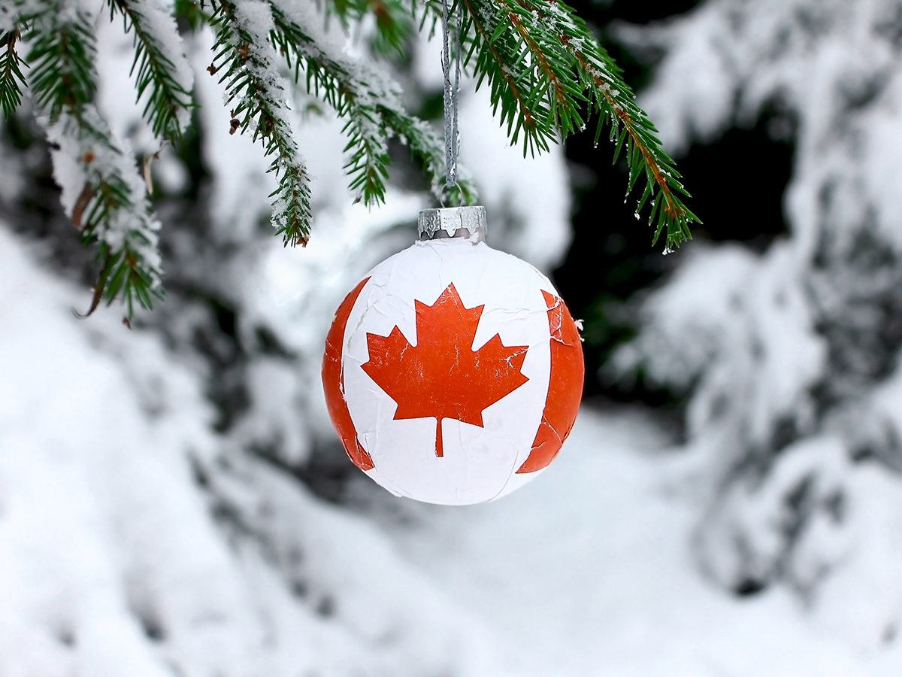
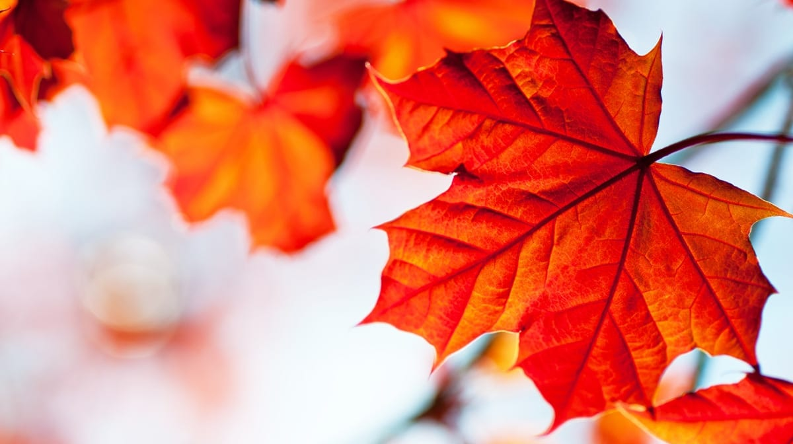
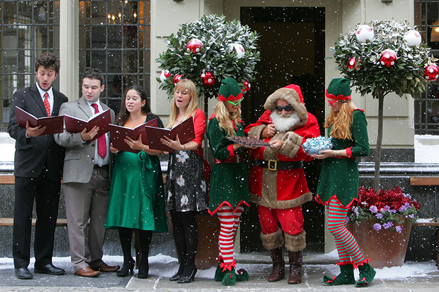
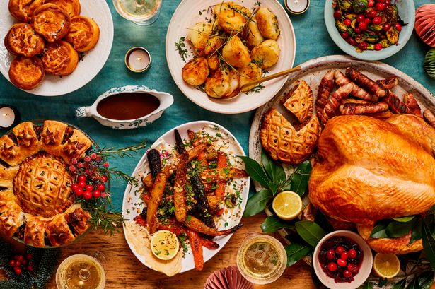

Christmas in Canada is a time of celebration and holiday cheer, with traditional activities and events taking place across the country. One of the most popular holiday traditions in Canada is the sending of Christmas cards, which are often exchanged with friends, family, and colleagues.
Another popular holiday tradition in Canada is the decorating of Christmas trees, which are often placed in homes, offices, and public spaces. Many Canadians also enjoy hanging lights and other decorations outside of their homes to add to the festive atmosphere.

One of the most iconic symbols of Christmas in Canada is the maple leaf, which is often incorporated into holiday decorations and gift-giving. Maple-flavored treats, such as maple syrup and maple-flavored candies, are also popular gifts during the holiday season.

Another popular holiday tradition in Canada is the singing of Christmas carols, which are often performed by choirs and vocal groups at various events and gatherings throughout the holiday season. Many churches also hold special Christmas services and concerts featuring traditional carols.

The winter season is a time of cold temperatures and snowy weather in many parts of Canada, making it the perfect time for outdoor activities such as skiing, skating, and tobogganing. Many Canadians also enjoy taking part in these activities as a way to embrace the winter season and get into the holiday spirit.

Christmas Eve is a special time in Canada, with many families gathering together for a traditional feast and the exchange of gifts. It is also a time for reflection and celebration of the Christmas story, with many Canadians attending church services or participating in other religious observances.

On Christmas Day, many Canadians continue the celebrations with more gift-giving, feasting, and spending time with loved ones. It is a time of joy and happiness, with people of all ages coming together to celebrate the holiday and create lasting memories.
Boxing Day, which is celebrated on December 26th, is a public holiday in Canada and is marked by further gift-giving, shopping, and other festive activities. It is also a time for charitable giving and volunteering, with many Canadians participating in food drives, toy drives, and other charitable events to help those in need.
In the days leading up to Christmas, many Canadian towns and cities host festive events and activities, such as parades, concerts, and markets. These events help to create a sense of community and bring people together to celebrate the holiday season.
As the holiday season comes to a close, many Canadians take part in New Year's Eve celebrations, with events such as parties, fireworks, and countdowns to midnight taking place across the country. The start of a new year is a time of hope and optimism, with Canadians looking forward to all that the coming year has in store.